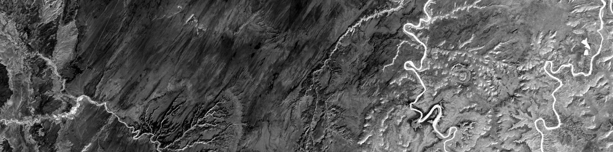

PUBLICATIONS
PUBLICATIONS
Home
Projects
Publications
CV
Home
Projects
Publications
CV
Fick, Stephen E., Travis W. Nauman, Colby C. Brungard, and Michael C. Duniway. 2021. “Evaluating Natural Experiments in Ecology: Using Synthetic Controls in Assessments of Remotely Sensed Land Treatments.” Ecological Applications 31(3). doi: 10.1002/eap.2264.
Koontz, M. J., North, M. P., Werner, C. M., Fick, S. E., & Latimer, A. M. (2020). Local forest structure variability increases resilience to wildfire in dry western US coniferous forests. Ecology letters, 23(3), 483-494.
Fick, S. E., Day, N., Duniway, M. C., Hoy-Skubik, S., & Barger, N. N. (2019). Microsite enhancements for soil stabilization and rapid biocrust colonization in degraded drylands. Restoration Ecology.
Green, J. M., Croft, S. A., Duran, A. P., Balmford, A., Burgess, N. D., Fick, S., ... & Young, L. E. (2019). Linking global drivers of agricultural trade to on-the-ground impacts on biodiversity. PNAS
Duniway, M. C., A. A. Pfennigwerth, S. E. Fick, T. W. Nauman, J. Belnap, and N. N. Barger. 2019. Wind erosion and dust from US drylands: a review of causes, consequences, and solutions in a changing world. Ecosphere 10:e02650.
Fick, S. E., N. Barger, and M. Duniway. 2019. Hydrologic function of rapidly induced biocrusts. Ecohydrology: e2089.
Fick, S. E., J. Belnap, and M. C. Duniway. 2019. Grazing-Induced Changes to Biological Soil Crust Cover Mediate Hillslope Erosion in a Long-Term Exclosure Experiment. Rangeland Ecology & Management.
Fick, S. E., N. N. Barger, J. Tatarko, and M. C. Duniway. 2019. Induced biological soil crust controls on wind erodibility and dust (PM10) emissions. Earth Surface Processes and Landforms.
Fick, S. E., and R. R. Evett. 2018. Distribution modelling of pre-Columbian California grasslands with soil phytoliths: New insights for prehistoric grassland ecology and restoration. PloS one 13:e0194315.
Morales, L. V., C. S. Sevillano-Rios, S. Fick, and T. P. Young. 2018. Differential seedling regeneration patterns across forest - grassland ecotones in two tropical treeline species (Polylepis spp.). Austral Ecology 43:514 -526.
Lusher, L., C. He, and S. Fick. 2018. Are professional basketball players reference-dependent? Applied Economics 50:3937-3948.
Hedlund, J., S. Fick, H. Carlsen, and M. Benzie. 2018. Quantifying transnational climate impact exposure: New perspectives on the global distribution of climate risk. Global Environmental Change 52:75 - 85.
Gardner, T., M. Benzie, J. Borner, E. Dawkins, S. Fick, R. Garrett, J. Godar, A. Grimard, S. Lake, R. Larsen, N. Mardas, C. McDermott, P. Meyfroidt, M. Osbeck, M. Persson, T. Sembres, C. Suavet, B. Strassburg, A. Trevisan, C. West, and P. Wolvekamp. 2018. Transparency and sustainability in global commodity supply chains. World Development.
Winkler, D. E., D. M. Backer, J. Belnap, J. B. Bradford, B. J. Butterfield, S. M. Copeland, M. C. Duniway, A. M. Faist, S. E. Fick, S. L. Jensen, A. T. Kramer, R. Mann, R. T. Massatti, M. L. McCormick, S. M. Munson, P. Olwell, S. D. Parr, A. A. Pfenningwerth, A. M. Pilmanis, B. A. Richardson, E. Samuel, K. See, K. E. Young, and S. C. Reed. 2018. Beyond traditional ecological restoration on the Colorado Plateau. Restoration ecology 26:1055 -1060.
Stuble, K. L., S. E. Fick, and T. P. Young. 2017. Every restoration is unique: testing year effects and site effects as drivers of initial restoration trajectories. Journal of Applied Ecology 54:1051 - 1057.
Persson, L., S. Karlsson-Vinkhuyzen, A. Lai, Asa Persson, and S. Fick. 2017. The Globally Harmonized System of Classification and Labelling of Chemicals - Explaining the Legal Implementation Gap. Sustainability 9:2176.
Fick, S. E., and R. J. Hijmans. 2017. WorldClim 2: new 1-km spatial resolution climate surfaces for global land areas. International Journal of Climatology 37:4302-4315.
Fick, S. E., C. Decker, M. C. Duniway, and M. E. Miller. 2016. Small-scale barriers mitigate desertification processes and enhance plant recruitment in a degraded semiarid grassland. Ecosphere 7:e01354.
Zefferman, E., J. T. Stevens, G. K. Charles, M. Dunbar-Irwin, T. Emam, S. Fick, L. V. Morales, K. M. Wolf, D. J. Young, and T. P. Young. 2015. Plant communities in harsh sites are less invaded: a summary of observations and proposed explanations. AoB Plants 7.
Young, T. P., E. P. Zefferman, K. J. Vaughn, and S. Fick. 2015. Initial success of native grasses is contingent on multiple interactions among exotic grass competition, temporal priority, rainfall and site effects. AoB Plants 7.
Young, D. J., L. M. Porensky, K. M. Wolf, S. E. Fick, and T. P. Young. 2015. Burning reveals cryptic plant diversity and promotes coexistence in a California prairie restoration experiment. Ecosphere 6:1- 11.